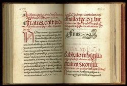

Christianizing the Nahua
Religious conversion, in the eyes of the Spanish colonizers, was an effective means of achieving political stability within the newly acquired colonial territory. To attain this goal, the missionaries engaged in evangelizing indigenous people in Mexico undertook the task of making the Christian message available in the native languages. In order to succeed, the friars also needed in-depth knowledge about the culture and religion of the Nahuas.
The key strategy for conversion was to educate the sons of the nobility using the model of the indigenous schools (calmecac). In the new schools, children were separated from their families, educated, and brought up to become the future Christian leaders of their own communities. This system created an indigenous elite who participated in a monumental effort to study the culture and language of the Aztecs. This elite was also responsible for the creation of a Nahua literary tradition; that is, an indigenous tradition fashioned and transmitted through alphabetic writing.
Newberry Library: Vault Ayer MS 1478

Antonio Nebrija’s Grammar and Dictionary was the first systematic study of the Spanish language. His methodology, derived from scholarly studies of Latin, provided a linguistic model that Spanish missionaries applied to the study of indigenous languages and utilized when creating an alphabetic version of Nahuatl.
This handwritten copy of Nebrija’s printed dictionary is trilingual—Nahuatl (in red ink) has been added to the original Spanish and Latin. Although the author is not identified by name, he is believed to be a native Nahuatl speaker. Scholar Mary L. Clayton finds evidence of this in the way that the author translated certain Spanish language expressions and phrases. Indigenous authorship indicates that this manuscript dictionary was for use by other Nahuatl speakers, not by native Spanish speakers.
Newberry Library: Ayer 871 .A952 M7 1555

The friars used the study and alphabetization of Nahuatl to find ways to appropriately communicate the Christian message. Linguistic and cultural differences, major obstacles in the process of evangelization, allowed the Nahuas some flexibility to shape Christian beliefs and practices to suit their religious needs and cultural traditions.
In a passage from his Vocabulario, Father Alonso de Molina comments on some of the difficulties he encountered assembling the first printed Spanish-Nahuatl dictionary.
Newberry Library: Vault Ayer 871 .A953 M7 1571

The Spanish missionaries relied on the indigenous elite to collaborate on the translation of the Christian tradition and to control indigenous religiosity. The choice of the form of Nahuatl spoken by the nobility as the literary language for indigenous education and evangelization was, as Molina reveals, a conscious agenda on the part of the friars.
Father Alonso de Molina’s Arte de la lengua played a key role in the standardization of classical Nahuatl as the language of Nahua Christianity.
Newberry Library: Vault Ayer 871 .A955 C35 M7 1565

The Catholic practice of confession had strong parallels with the indigenous practice of neiolmelaoaliztli, a cleansing ritual that involved recitation of transgressions, self-sacrifice, and offerings to the goddess of filth, Tlazoteotl. This posed a great challenge for the friars who needed to clarify distinctions between the two. However, it was nearly impossible to avoid confusions of this sort when teaching Christian doctrine and practice. In the end, many friars ignored the religious meanings implied in indigenous religious practices.
Father Molina’s Confesionario breve shows how writing a Nahuatl-language confessionary was a subtle art involving both linguistic translation and cultural interpretation.
Newberry Library: Vault Ayer MS 1467
The Catholic Church was deeply disturbed by efforts to translate the Bible into vernacular languages. Saint Jerome’s Latin translation, the Vulgate (406), was the official version of the Bible for Roman Catholics. After the Council of Trent (1545-1563), the Church, anxious to maintain the authority of the Vulgate as the only source of the divine word, regarded versions of the Bible in the readers’ languages a dangerous threat.
Missionaries nonetheless needed their audience to understand the message. Along with sermons, Nahuatl Bible translations became a powerful and singular expression of indigenous Christianity. The Epistolae et Evangelia is a compilation of selected passages from the Bible translated into Nahuatl for Sunday readings and special church holidays.
Newberry Library: Ayer MS 1484

Daily spiritual exercises were designed to reinforce indigenous awareness of the teachings of the Gospel. Each day begins with a passage from the Bible, followed by a meditation designed to deepen the readers’ knowledge and love of the Christian god and teach them to follow the commandments. The section devoted to Sunday explains the new covenant between God and the Christians and the mystery of the Eucharist. The words of Jesus are cited in Latin and translated to Spanish and Nahuatl for the indigenous audience.
Newberry Library: Vault oversize Ayer MS 1485

Franciscan friar Bernardino de Sahagún’s collection of Nahuatl sermons for Sunday mass and Saints’ days is, according to scholar Frederick Schwaller, “a careful interweaving of Aztec moral philosophy and belief with Catholic dogma and belief.” Sahagún’s need to make Christianity intelligible to the Nahuas led him to tailor both the content and the language of the text. The difficulties he confronted are evident in his Spanish marginal commentaries to the main text, where he reflects on how to make the message more effective.
Newberry Library: Ayer MS 1486a
To his collection of basic Biblical readings in Nahuatl (those employed in the Liturgy and in preaching), Sahagún added an exposition of theological virtues (faith, hope and charity) and the Christian view of the afterlife (death, heaven, and hell). The Yn nemachtiliztlatolli (Educational Speech) provides a quick over-view of Christian doctrine for newly converted Nahuas. The last section is on the topic of death and judgment. The text uses the recognizable style of the Nahua oral tradition to explain the Christian vision of the fate of the soul at the time of death. Father Sahagún’s signature is at the bottom of the page.
Newberry Library: Ayer MS 1486d

The missionary friars feared misinterpretation of the Christian doctrine among new converts, whom they regarded as not truly committed to Catholicism. Responding to this concern, Friar Sahagún added an appendix to the collection of his doctrinal writings, in which he included admonitions specifically warning the Indians against some of their traditional beliefs.
A fragment of the Appendix begins by questioning the Nauha belief that the tears and the penitence of children can gratify Titlacahuan, the tloque naoaque (the Lord of the Close and the Near, an indigenous idea of “supreme being” sometimes applied to the Christian god).
Newberry Library: Case VM 2149.G73 1576

This gradual (choir book) contains the sung portions of Sunday mass performed during the feasts focused on Christ. Published in Mexico, this copy is signed by Juan Hernández, a sixteenth-century cantor for the Mexico City Cathedral which had Nahua choirs as early as 1532. Found among the ruins of an Indian Church destroyed during the Mexican Revolution, this book was given to Francisco Plancarte, the Mexican Archbishop of Linares, Mexico, by the Indians to whom it belonged. In 1916, Archbishop Plancarte presented this volume to the Newberry.
Newberry Library: Wing ZP 535 .P447

Born in 1533, the son of a Nahua mother and a Spanish father, Diego Valadés was the first mestizo to enter the Franciscan Order. Elected Franciscan representative to the Vatican and sent to Rome in 1570, Valadés wrote and illustrated the Rhetorica Christiana, the first published account of the evangelization of Mexico.
Valadés depicts his mentor Friar Pedro de Gante using images to instruct indigenous congregants. The setting, an idealized church forecourt, further celebrates the establishment of Christianity in Mexico.
Newberry Library: Ayer folio F1219.73 .S24 1993
Between 1559 and 1561, Father Sahagún interviewed learned indigenous noblemen in the small town of Tepeapulco. The elders showed him a variety of pictorial documents when answering his questions about Aztec religion and culture. Four indigenous noblemen fluent in Spanish, Nahuatl, and Latin (Sahagún's former students from the Franciscan Colegio de Santa Cruz in Tlatelolco, Mexico City) assisted him as scribes and made the manuscript's drawings.
Although Sahagún pursued his work in order to create tools for eliminating Aztec religious practices, his work is now a major source of information about Aztec religious knowledge and practice. Atamalqualiztli involved multiple Aztec deities and took place every eight years.
Sahagún’s Historia general de las cosas de Nueva España (General History of the Things of New Spain)
Father Sahagún's magnum opus is his twelve book encyclopedic compendium of Aztec religion, history, culture, and language, the General History of the Things of New Spain. Written by Sahagún in collaboration with indigenous informants and assistants, the manuscript includes text in both Nahuatl and Spanish (left column), and is richly illustrated with over 1850 drawings. The History is now housed in Florence’s Medici Laurentian Library and is commonly referred to as the Florentine Codex.
Newberry Library: Ayer folio F1229 .S23 1979 vol. 1
Aztec children were usually given the name of their birth day and a learned soothsayer would consult a tonalamatl (divinatory almanac), such as the Codex Borbonicus, to determine the child's future prospects. In the Nahuatl text that accompanies this drawing, the reader is told that the infant would be ceremonially bathed three days later to ensure the good fortune brought by being born on 10 Rabbit.
Newberry Library: Ayer folio F1229 .S23 1979 vol. 2
Expert featherworking, a highly prized pre-conquest art, continued to be in great demand in sixteenth-century Mexico. In these paintings, rectangular panels of green maguey cactus fiber and white cotton show the featherworking process. The high status of these skilled indigenous artisans is suggested by their clothing (European ruff-necked garments combined with traditional capes) and the European style of the tiled platforms and columns and arches of the architecture. The use of appropriate Nahua pictographs to explain the featherworking process indicates that indigenous artists painted these scenes.
Newberry Library: Ayer folio F1229 .S23 1979 vol. 3
In this scene, Spanish ships lie at anchor under the arc of a rainbow off the Veracruz shore, and trade goods, horses, dogs, cattle and pigs are being unloaded. Three people stand on the right: an indigenous man wearing a cape exchanges gestures with an indigenous woman (Malintzin, Cortés’s interpreter); Cortés faces them; and a seated Jerónimo de Aguilar writes.
This scene may have been modeled on an eyewitness painting made by Motecuhzoma’s tlacuilo (painter/scribe) sent to record the newcomers. In a preamble, Sahagún tells the reader that Book 12 is based on the conquered people's account of the war and includes related details that the Spanish conquerors did not know.